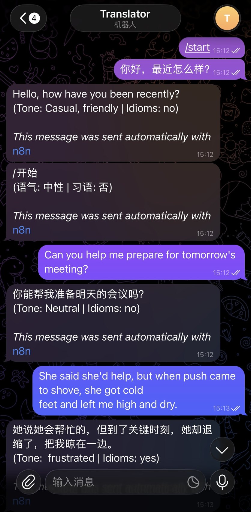
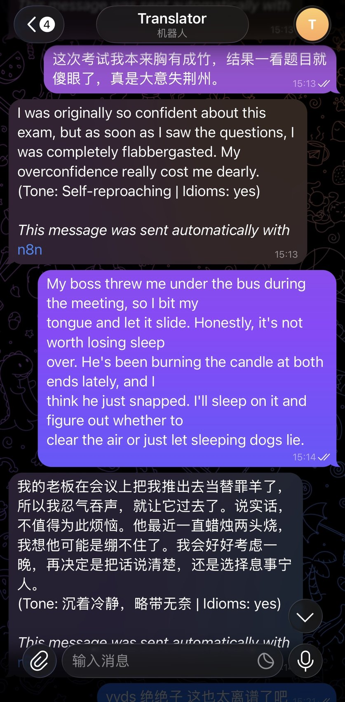
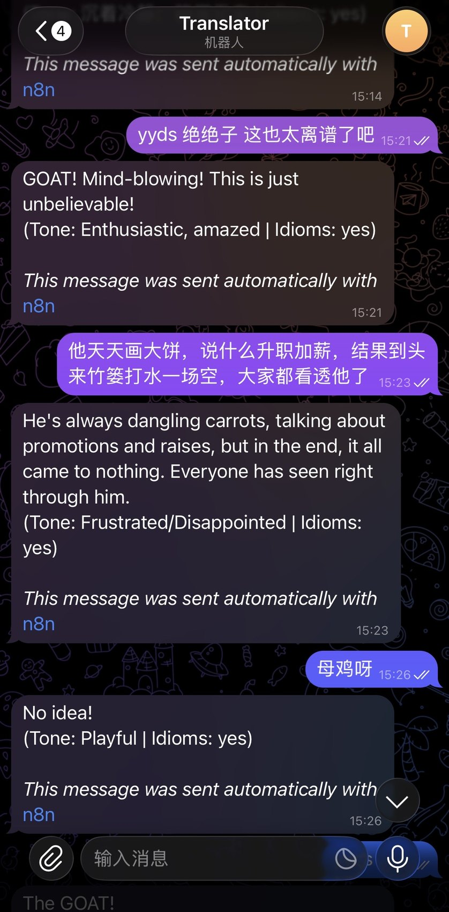

翻译工具和聊天场景割裂
用户在聊天中遇到外语、中文网络用语或职场习语时，通常需要复制到另一个翻译工具，再切回聊天窗口。这个过程打断沟通，也容易丢失上下文。
Project 01 / n8n + Telegram + Gemini
将跨文化翻译 Agent 接入 Telegram 聊天场景，让用户直接在熟悉的聊天界面里发送中文或英文消息，并收到自动翻译、语气判断和习语处理结果。
Problem Framing
用户在聊天中遇到外语、中文网络用语或职场习语时，通常需要复制到另一个翻译工具，再切回聊天窗口。这个过程打断沟通，也容易丢失上下文。
中文和英文里的习语、成语、讽刺、玩笑和无奈语气都不能逐字处理。Bot 需要先判断语言和含义，再决定目标语言中的自然表达。
Workflow Architecture
{{ $json.message.text }}，按系统规则翻译。{{ $json.output }} 回传给正确用户。Integration Detail
| 模块 | 关键配置 | 设计意图 |
|---|---|---|
| Telegram Trigger | 监听 Message 类型输入。 | 只处理文字消息，避免图片、文件等非目标输入干扰原型测试。 |
| AI Agent + Gemini | 用户消息字段映射为 {{ $json.message.text }}。 | 保证模型处理真实用户输入，而不是空 prompt 或测试文本。 |
| 系统规则 | 先识别语言，再判断习语/成语和语气，最后输出目标语言。 | 把翻译任务拆成可解释的 Agent 行为步骤。 |
| Send Message | chat ID 来自触发节点，回复内容来自上一步输出。 | 确保多人使用时，回复回到对应发送者，而不是固定账号。 |
| 发布与运行 | workflow 发布后由 n8n 云端运行。 | Bot 不依赖本地窗口在线，更接近可分享的产品原型。 |
Agent Rules
中文输入翻译为英文，英文输入翻译为简体中文；遇到非中英文输入时给出支持范围提示。
把 yyds、绝绝子、画大饼、push came to shove 等表达当作非字面语言处理。
在结果中标注语气和是否包含习语，方便观察模型是否理解了真实情绪。
Testing Evidence



Product Thinking